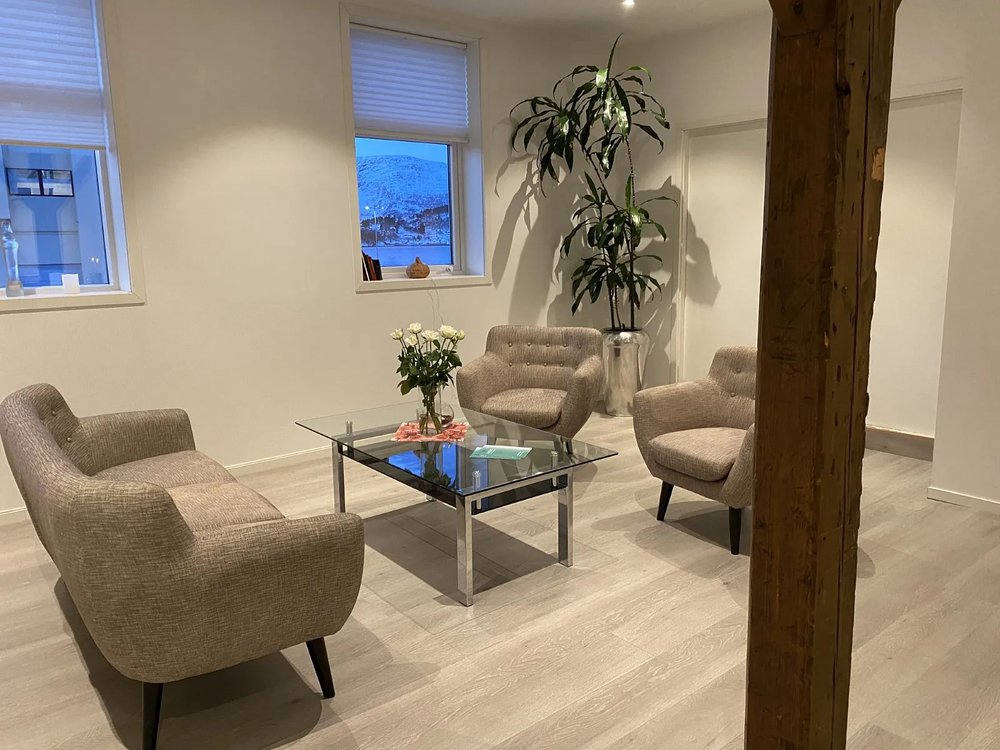
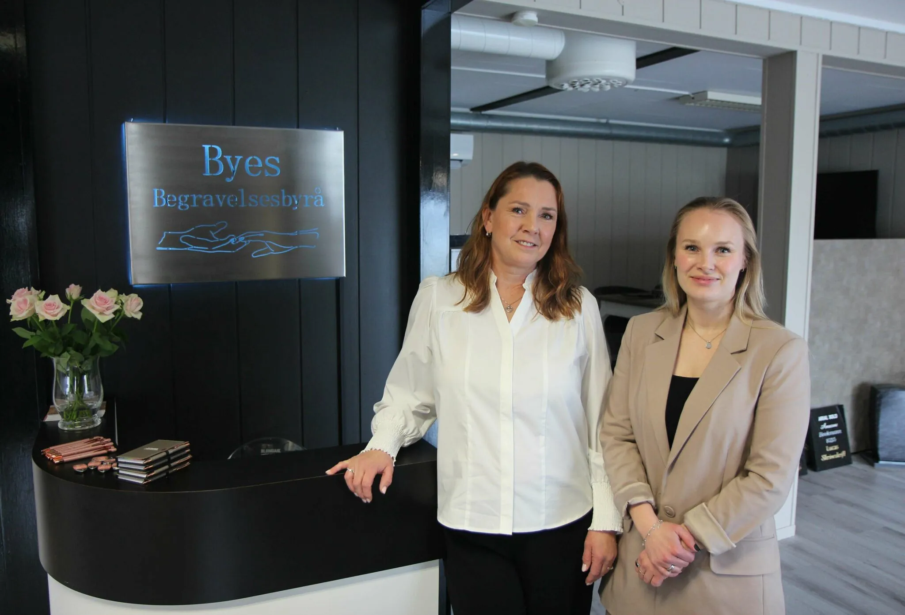
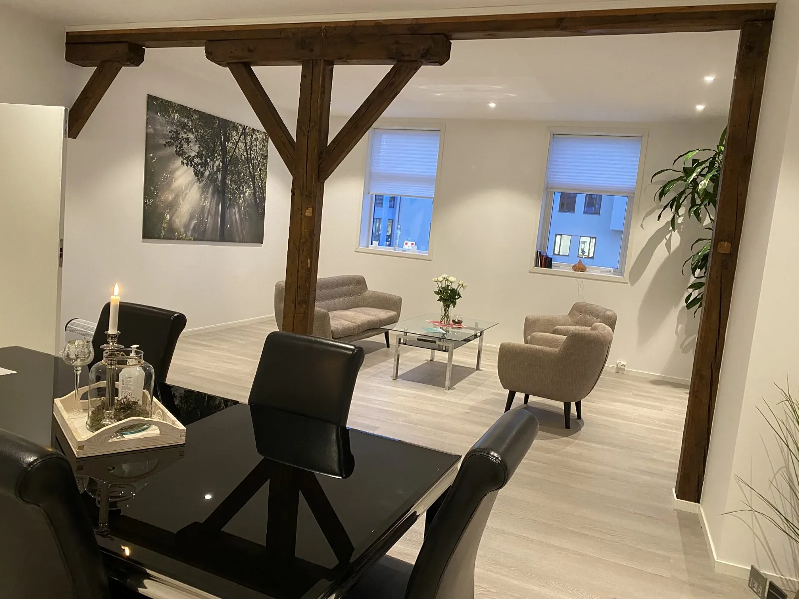
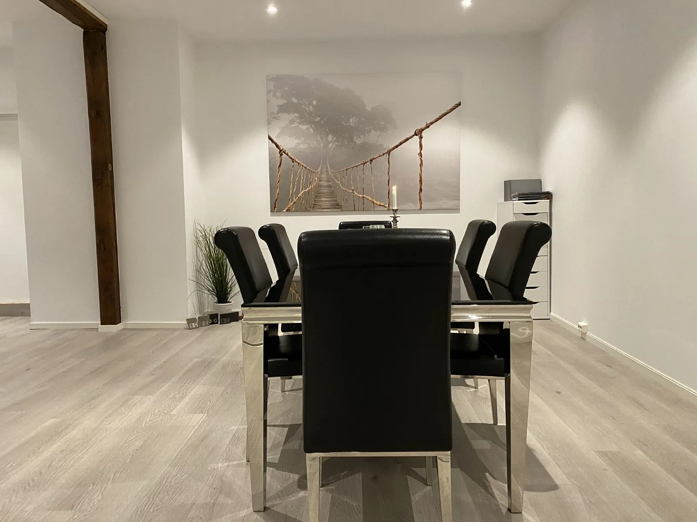
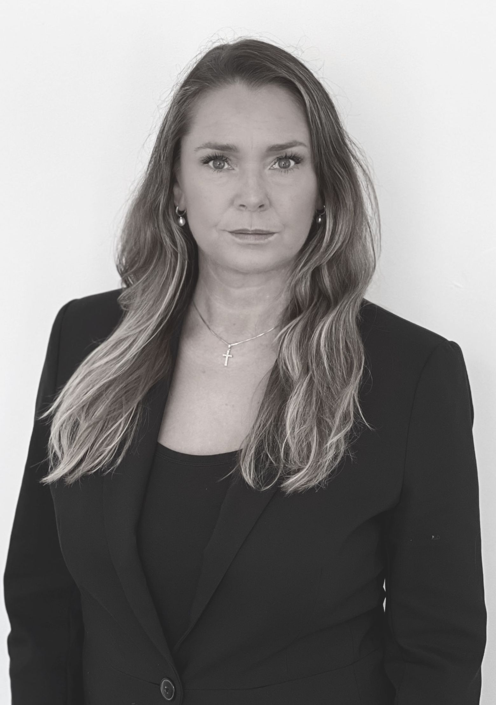
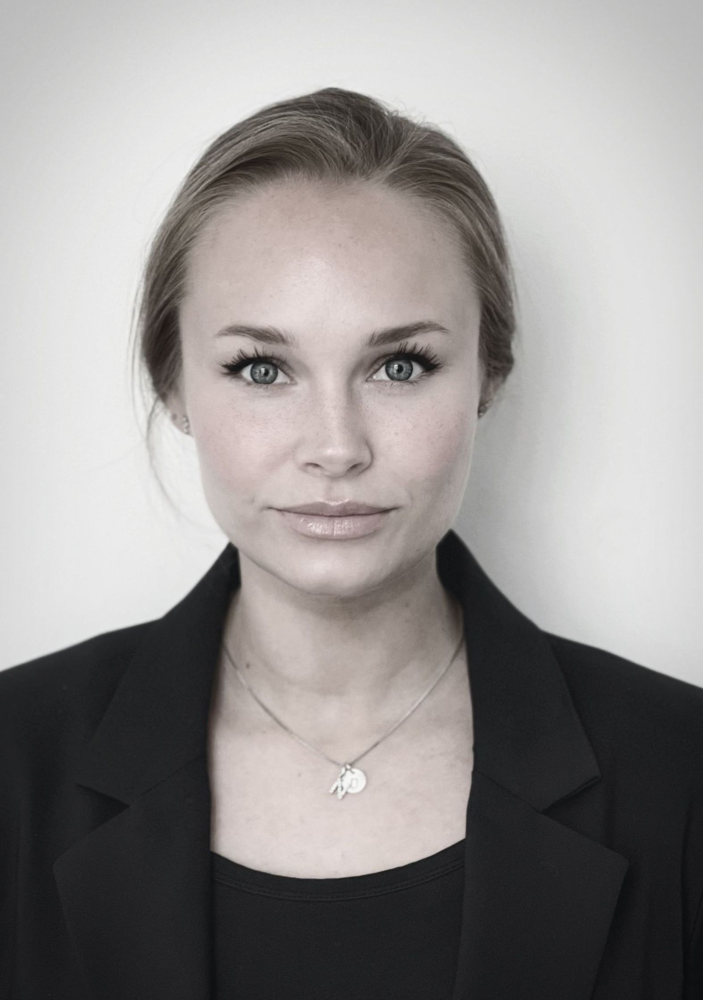
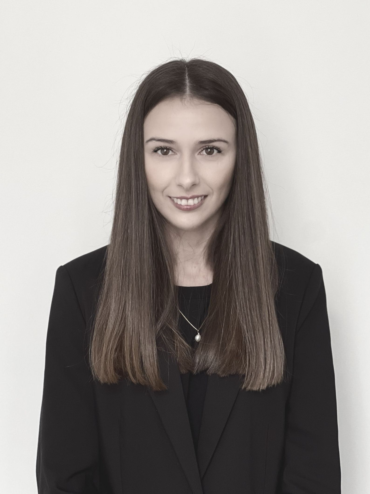

Første samtale vi går gjennom mulighetene sammenDere trenger ikke ha oversikt over alt — vi tar det steg for steg, sammen med dere



Gjennom generasjoner har vi hjulpet familier i Ålesund og omegn med omsorg, trygghet og verdighet i møte med livets siste avskjed.
Vakttelefonen 92 04 99 99 er betjent hele døgnet. Dere trenger ikke vente til lege eller ambulanse har kommet for å snakke med oss — vi er tilgjengelige når som helst for råd og veiledning.
Planleggingen starter med en samtale der vi sammen går gjennom mulighetene: seremoniform, seremonisted, musikk, programhefter og andre personlige innslag. Målet er en avskjed som føles riktig og meningsfull.
Mange velger en tradisjonell seremoni i Den Norske Kirke, andre ønsker en livssynsåpen, humanistisk eller annen religiøs seremoni. Vi tilrettelegger for ulike tradisjoner, kulturer og personlige ønsker.
Arv og skifte, gravstein, urnenedsettelse og avdødes digitale liv. Gjennom samarbeidet med advokatfirmaet Judicia tilbyr vi en kostnadsfri førstesamtale på 30 minutter om arv og skifte.
Har dere spørsmål eller behov for hjelp, er dere alltid velkommen til å kontakte oss. Vi svarer raskt og hjelper dere videre — uansett situasjon.
Be oss ringe degVi tar kontaktVil du heller ringe? Vakttelefon 92 04 99 99, hele døgnet.
Enten det gjelder et dødsfall, planlegging av begravelse eller spørsmål i tiden etterpå, hjelper vi dere videre.
I hjemmet, på sykehus eller sykehjem, i utlandet eller ved ulykker og andre spesielle hendelser. Vi bistår med henting og transport av avdøde, og veileder dere gjennom de neste stegene — hele døgnet.
Seremoni, blomster, kister og urner, musikk og transport. Vi hjelper dere med å skape en varm og personlig seremoni som gjenspeiler livet som er levd, tilpasset ønsker, tradisjoner og livssyn.
Råd og veiledning rundt arv og skifte, gravstein og gravminner, urnenedsettelse, minnebok og avdødes digitale liv. Vi følger dere opp også når seremonien er over.
Minnesider og blomsterbestilling finner dere på byes.no.
Tre tilbakemeldinger fra familier, slik de står på byes.no.
«Jeg vil på vegne av familien få takke Byes begravelsesbyrå i forbindelse med vår fars bortgang og begravelse. Fra første kontakt til avslutning så var det en flott og behagelig opplevelse. Rolig som skjæra på tunet. Forklarende når vi stilte spørsmål. Humor når dette var viktig og riktig. En bortgang og begravelse spenner over så mange ulike spekter. Byes var tilstede i alle disse faser. Jeg håper inderlig det er lenge til vi får bruk for dere, men om dagen og sorgen skulle ramme oss på nytt, så er bekjentskapet og roen noe vi tar med oss videre i tiden som kommer. Så tusen takk for støtten, hjelpen og smilet.»
«Jeg vil takke så mye for en meget flott og verdig bisettelse for far, Torstein. Deres varme framferd, samtidig med proff innstilling og utførelse, gjorde at familien følte seg vel og trygg. Presten Gustav sin væremåte, sjarm og klokskap ga inntrykk for livet, særlig for barna. Organisten må også få skryt, veldig vakkert. Jeg fikk også mye tilbakemeldinger fra øvrige familie og venner om at bisettelsen var meget bra og med nytenkende vinkling.»
«Gjensidig takk til dere i Byes, med en ekstra takk til Iris med gode og empatiske samtaler. Dere har opptrådd på en veldig fin og god måte i en vanskelig tid. Det har vi satt veldig pris på både for egen del og min familie.»
Byes Begravelsesbyrå ble grunnlagt i 1886 av Eduard A. Bye, i hjertet av Ålesund sentrum. I dag kombinerer vi lange tradisjoner med moderne løsninger og personlig oppfølging.



Kontakt lege eller ambulanse først. Når dødsfallet er bekreftet, kan dere kontakte oss, så sørger vi for en trygg og verdig ivaretakelse. Dere trenger ikke vente til lege eller ambulanse har ankommet for å snakke med oss — vi er tilgjengelige når som helst for råd og veiledning.
Avdøde blir ivaretatt av personalet frem til vi overtar ansvaret. Legen ved institusjonen utsteder dødsattest og sender den til skifteretten. Vi samarbeider med institusjonen, avtaler henting i samråd med dere, og utfører stell og nedlegg i kiste etter avtale.
Ved kremasjon avsluttes seremonien vanligvis ved at kisten bæres ut til bårebilen, og urnen settes ned ved gravstedet noen uker senere. Ved jordbegravelse følger man avdøde helt frem til gravstedet. Vi gir informasjon og veiledning rundt begge alternativene.
Nei. Mange velger en tradisjonell seremoni i Den Norske Kirke, mens andre ønsker en livssynsåpen, humanistisk eller annen religiøs seremoni. Vi tilrettelegger for ulike tradisjoner, kulturer og personlige ønsker. Det viktigste er at seremonien oppleves varm, personlig og verdig.
Ja, vi gir råd og veiledning om privat skifte, offentlig skifte, uskiftet bo og dødsbo av liten verdi. Gjennom samarbeidet med advokatfirmaet Judicia tilbyr vi også en kostnadsfri førstesamtale på 30 minutter om juridiske spørsmål.
I Buholmgata 1 i Ålesund sentrum, der vi også har utstilling av kister, urner og gravsteiner. Vi har i tillegg kontor på Valderøy (Øvstevegen 23) og i Langevåg (O.A Devoldvegen 16, Devoldfabrikken, 3. etg).
Buholmgata 1 har vært vårt hjem siden 1886. Vi har også kontor på Valderøy og i Langevåg. Vakttelefonen er betjent hele døgnet.